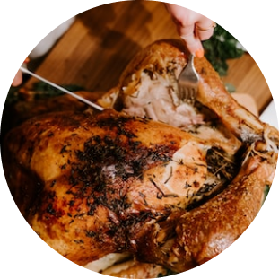

Ingredients:
1 lb chicken wings
1 tbsp olive oil
1 tsp salt
1/2 tsp black pepper
1/2 tsp garlic powder
1/2 tsp paprika
Cooking spray
Most students in their first years of university/college do not cook due to their meal plan. However, most students do not end up cooking due to lack of simple recipes. Hence, they resort to take out.
A quick recipe to get you started:
Here you will be able to search a variety of recipes with a simple search endlessly. If you’re unable to think of what to eat, just type a quick key word.

Air Fryer Chicken Wings
Instructions:
Preheat the air fryer to 400°F.
In a bowl, mix together the olive oil, salt, black pepper, garlic powder, and paprika.
Add the chicken wings to the bowl and toss to coat them with the seasoning mixture.
Lightly spray the air fryer basket with cooking spray.
Arrange the chicken wings in a single layer in the air fryer basket.
Cook the chicken wings for 12-15 minutes, flipping them halfway through, until they are
crispy and cooked through.
Serve the chicken wings hot with your favorite dipping sauce.
Enjoy your delicious and easy air fryer chicken wings!